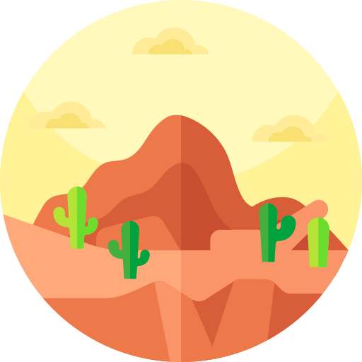

Need Someone Who Fits Your Requirements?.
I am a young professional and graduate of York University in Ontario, Canada. Currently I live in HCMC, Vietnam.
My core skills focus around public and motivational speaking, developing curriculum for corporate tranining and classrooms, as well as promoting a productive learning enviroment.
My recent development has been focused on CS and Web Design on a contract basis, with goals to bring these skills into the classroom as well.
With regards to this I have experience with HTML, CSS, and Javascript as well as some experience with Node.js, MongoDB and React.
On a personal note, I love hot coffee ☕, keeping and catching fish 🐟, and practicing martial arts 🥊.
My Skills.

Education
I've worked in the education and professional training industry for the past five years, across all skill levels, with a focus on language training as well as professional development. I excel in group organization and creating clear and concice frameworks for students to facilitate their training.

Computer Science
I've spent the last two years growing my IT and CompSci skills to better fit into the modern digital economy. I have experience in full stack development but mostly work on the front end for clients. I have created a range of personal as well as corporate websites of a high quality to suit the needs of my clients. as a hobby I've also spent a lot of time developing videogames and phone apps.
Get In Touch
Take your project to the next level
Got a personal or company website that needs to be completed? Need quality training for your employees with reguards to foreign buisness?
I'm always avaliable and happy to take on requests reguarding professional training or web development. .
CONTACT ME